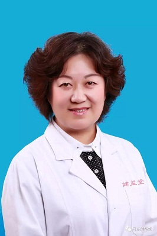

中医内科
返回
主任：景华
从1989年中医学院毕业后，一直从事中医临床工作。对内科的高血压、冠心病 、中风谝瘫后症 、 风湿性关节炎 、胆结石 、 肾结石 、胃炎、 结肠炎；对妇科的不孕不育、附件炎、月经不调 、痛经、更年期综合征、产后缺乳、产后抑郁等妇科疾病；对皮肤科的酒渣鼻 、荨麻疹等皮肤疾病；对儿科疾病采用推拿结合中医的治疗方法对感冒发热 、咳嗽 、消化不良、厌食、大便干燥、腹泻、遗尿、尿频、夜惊、生长发育迟缓等疾病治疗均有独特疗效。 